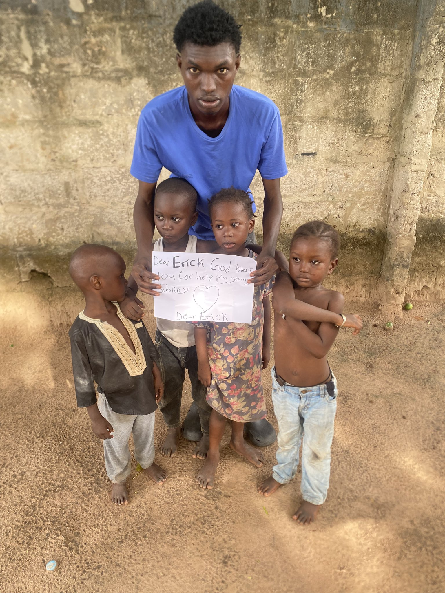

THE GAMBIA · FAMILY SUPPORTSupporting
Food and rent for Damsarr’s family
I met Damsarr on X, where he has been desperately reaching out for help for himself and his family. When we spoke, he shared that his parents died in a car accident two years ago, leaving him as the sole caretaker of his four younger siblings. He shared how difficult it has been to find support and meet their daily needs. I’m sharing his story to raise funds for food, rent, and other essentials.
$500 initial goalRead the story & ways to help →